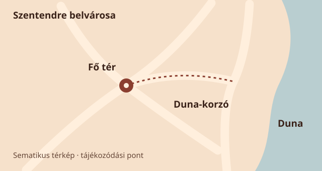

Kapcsolat
Találkozzunk Szentendrén
Korongozás és kézműves kerámia Szentendre belvárosában.
Elérhetőségek
- Cím
- 2000 Szentendre, Agyagudvar köz 4., udvari műhely
- Telefon
- +36 30 000 24 68
- hello@agyagpad.example.com
- A műhelybolt nyitvatartása
- Csütörtök–vasárnap, 10–18 óra
A megadott elérhetőségeken jelenleg nem fogadunk megkeresést.

A részletes, nagyítható térkép internetkapcsolattal nyílik meg.
Megközelítés
Ha gyalog érkezel Szentendre belvárosába, a Fő tér legyen a kiindulópontod. Ha a Duna felől jössz, a korzóról indulj a belváros felé. A fenti térképen mindkét tájékozódási pontot megtalálod. Az utcák részletes nézetét az OpenStreetMap hivatkozás nyitja meg.
A címnél az udvari műhelyt keresd. Ha a boltba néznél be, csütörtöktől vasárnapig 10 és 18 óra között várunk. Ha korongozásra jössz, a választott alkalom kezdési idejét a Tanfolyamok oldalon találod.
Megnézem az időpontokatÍrj nekünk
Kérdésed van a tanfolyamokról, a kerámiákról vagy a műhelylátogatásról?